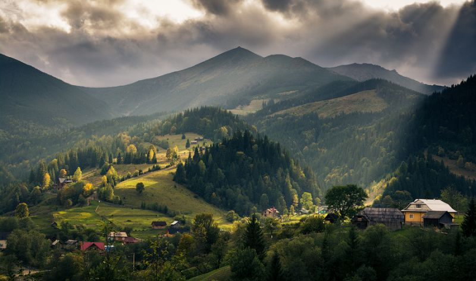
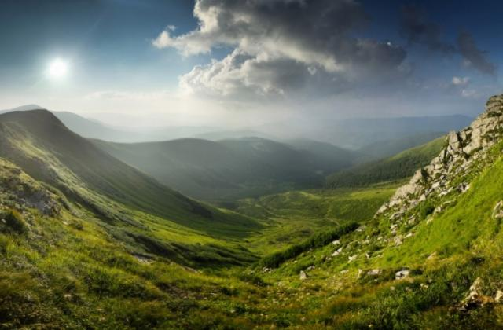
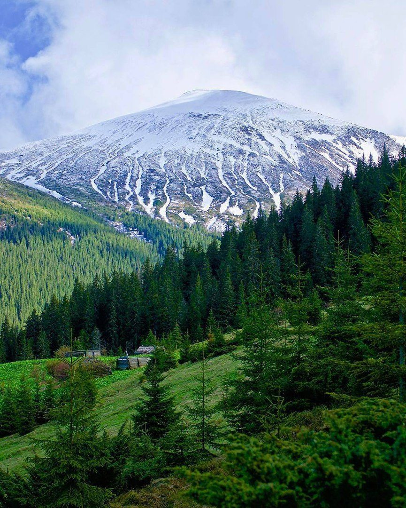

Відпочинок у Карпатах


Українські Карпати — частина гірської системи Східних Карпат у Західній Україні. Вони поділяються на Зовнішні Східні Карпати та Внутрішні Східні Карпати.

Найвища вершина Карпат – гора Говерла, яка має правильну пірамідальну форму. Окрім Говерли, тут знаходяться ще чотири вершини, висота яких перевищує 2000 метрів – Чорна Гора (2028 м), Петрос (2020 м), Гутин Томнатик (2013 м), Ребра (2002 м).